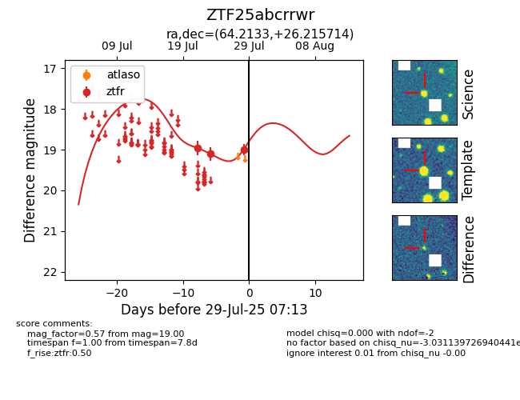

Target ZTF25abcrrwr at 2025-07-29 07:13, see:
FINK: fink-portal.org/ZTF25abcrrwr
Lasair: lasair-ztf.lsst.ac.uk/objects/ZTF25abcrrwr
ALeRCE: alerce.online/object/ZTF25abcrrwr
alt names
ZTF25abcrrwr (ztf,fink)
coordinates:
equatorial (ra, dec) = (64.2133,+26.21571)
galactic (l, b) = (170.1411,-17.28963)
photometry
last ztfr=19.00
3 ztfr detections
